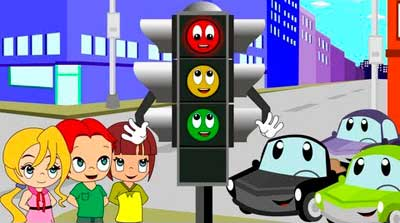

Los semáforos son dispositivos de señales que se sitúan en intersecciones viales, pasos de peatones y otros lugares para regular el tráfico y el tránsito de peatones.
Los semáforos existen en todas las grandes ciudades del mundo y en las pequeñas también, incluso muchas veces en aquellos pueblos o lugares en donde no hay un control de tránsito.
